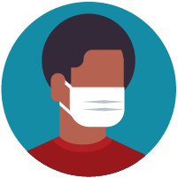

At the moment there are no vaccines or medicine to cure it so
it is better to avoid it.
Rather than taking risk better to take all the necessary
precautions given bellow
As of now the the virus spreads from person to person
Between people who are in close contact with one another
(within about 6 feet).
Through respiratory droplets produced when an infected
person coughs or sneezes.
These droplets can land in the mouths or noses of people who
are nearby or possibly be inhaled into the lungs.
2. Protect yourself
Clean your hands every 1 hour
Wash your hands often with soap and water for at least 20
seconds especially after you have been in a public place, or
after blowing your nose, coughing, or sneezing.
If soap and water are not readily available, use a hand
sanitizer that contains at least 60% alcohol. Cover all
surfaces of your hands and rub them together until they feel
dry.
Avoid touching your eyes, nose, and mouth with unwashed hands.
Avoid Close contact
Avoid close contact with people who are sick
Put distance between yourself and other people
Especially if the virus is spreading in your community
3. Take steps to protect others
Stay at home if sick
If you are not well,have a slight fever or cold it would be
best to stay at home to prevent risk of infecting others
Seek medical care if needed
Cover coughs and sneezes
Cover your mouth and nose with a tissue when you cough or
sneeze or use the inside of your elbow.
Dispose oif used tissues immediateley.If masks are used
discard after the days use
Always wash your hands after you cough with soap and water for
20 secs

Wear a facemask if you are sick
Wear a mask if you are sick to prevent spreading
Preferably masks of type N-95
cover your mouth with a shawl if masks are not available As
masks are of low supply
Clean and disinfect
Clean AND disinfect frequently touched surfaces daily. This
includes tables, doorknobs, light switches, countertops,
handles, desks, phones, keyboards, toilets, faucets, and
sinks.
If surfaces are dirty, clean them: Use detergent or soap and
water prior to disinfection.
Always wash your hands after you cough with soap and water for
20 secs